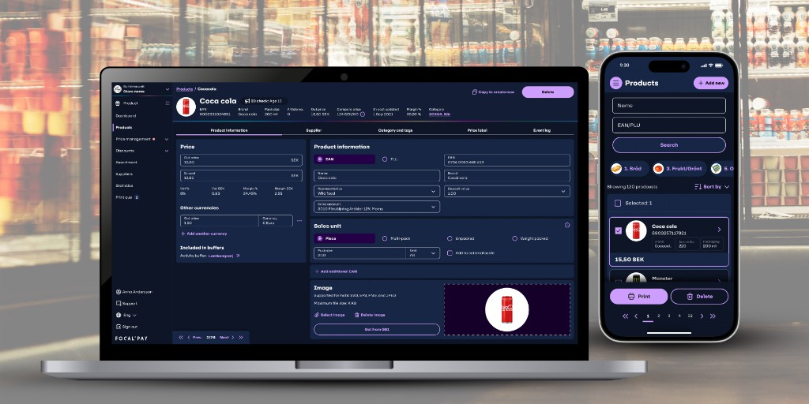
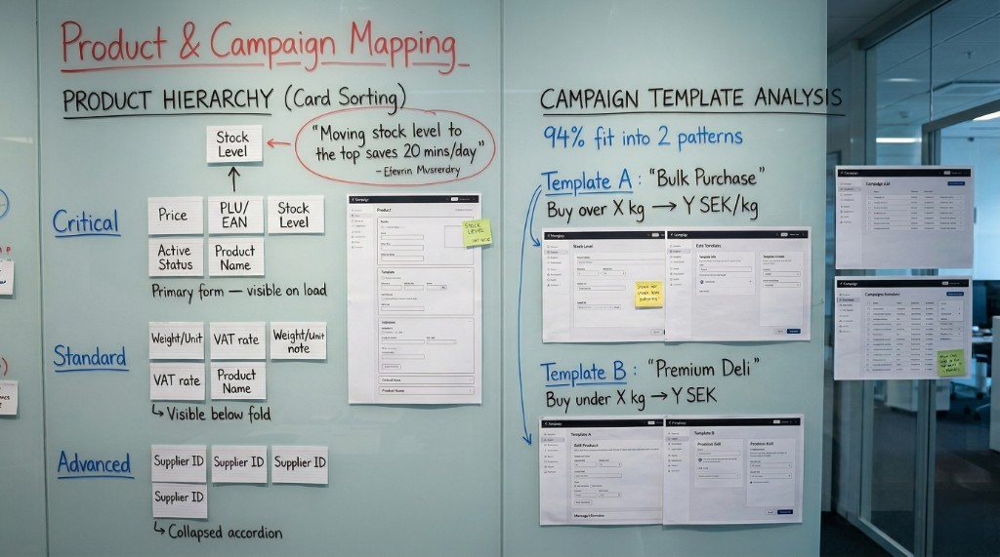
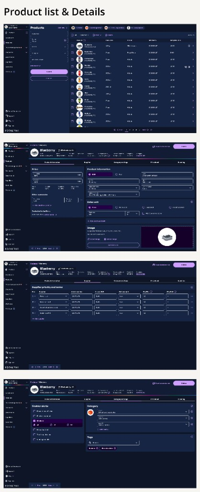
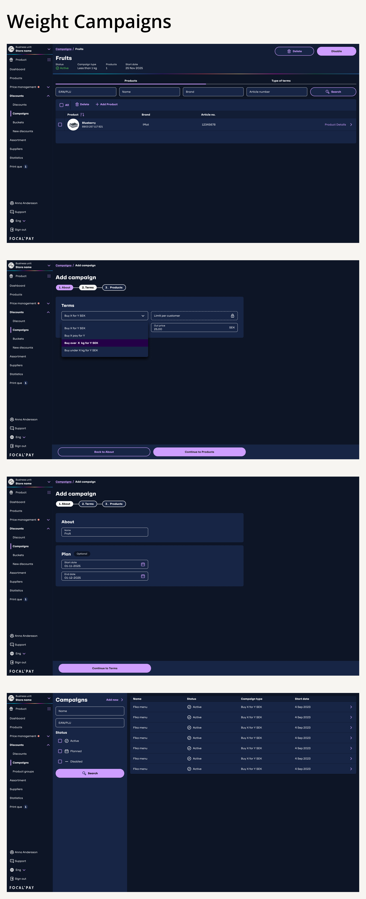

7 → 2
steps in the inventory and pricing flow.
Redesigning the back-office where retailers manage products, prices and campaigns

The problem: Store teams managed thousands of products and complex pricing in a back-office built by developers, with no design input and no user testing. The product form showed 40+ fields at once, and weighted campaigns were set up by hand.
What I did: Interviewed 6 managers from 6 customer businesses, ran two card-sorting sessions, and analysed three months of real campaign data. I redesigned the product form and campaign creation, working with the PM and engineering team.
Key decisions: Split the product form into three tiers based on card sorting. Replaced the manual campaign form with two templates, after finding that 94% of weighted campaigns followed two patterns.
Result: A seven-step inventory and pricing flow cut to two, 35% less operational friction, and campaign creation 25% faster with 78% fewer errors. The redesign is live in several stores.
Part of the Focalpay platform: products and prices set up here power the Cashier POS and the Mobile shopping app.
The Focalpay Back-office is where retailers set up everything the POS and the shopping app use: products, prices and campaigns. Customers ranged from the footwear brand Icebug to supermarket chains like Matrebellerna and Matvärlden.
I joined halfway through. Developers had built the back-office without a designer, and it had never been tested with users. I focused on the two areas where store teams lost the most time and made the most mistakes: managing products and creating weighted campaigns.
I worked with the same PM and engineering team as on the mobile app, from interviews and card sorting to testing, a design system in light and dark mode, and handoff to engineering.
I interviewed 6 managers from 6 customer businesses. They did real tasks while thinking aloud, and I followed up with questions. With a limited number of B2B customers, I could work directly with the businesses that used the product.
"I know the data I need, but I spend too long hunting for it."
"Every time base prices change, I'm double-checking campaigns by hand."
Weighted campaigns were set up by hand. Discounts on products sold by weight had to be calculated and typed in manually. Managers often described this as slow and easy to get wrong.
Every product showed 40+ fields at the same time. Across thousands of products, that was overwhelming.
Discounts on products sold by weight were calculated and typed in manually.
Product, price and campaign data didn't always agree, so managers double-checked before trusting what they saw.
Forty fields at once is less a form, more an exam.

I audited the existing screens, ran two card-sorting sessions with 4 retail managers each, explored three layout ideas with the PM and engineers, and built mid-fidelity prototypes. Then I tested the old and new versions with 5 store managers and handed off component specs to engineering.

Card sorting showed which fields managers need first and which can wait, so I split the form into three levels.
| Tier | Key Fields | Display Rule |
|---|---|---|
| Critical | Price, PLU/EAN, Stock Level, Active Status, Product Name | Primary form — visible on load |
| Standard | Weight/Unit, VAT rate, Campaign status, Category | Visible below the fold |
| Advanced | Supplier ID, Barcode format, Internal Article Number | Collapsed accordion — on click |
"Moving stock level to the top sounds like a small thing. For us, it saves 20 minutes a day."
— Assistant Manager, Matvärlden94% of campaigns followed two patterns
The interviews told me creating campaigns was painful, but not why. So I asked our supermarket customers, the main users of weighted campaigns, for their last three months of campaign data, and analysed it myself.
94% of weighted campaigns followed one of two patterns. So instead of a flexible form where every campaign meant doing the maths, I designed a builder with two ready-made templates.

| Template | Logic | Use Case |
|---|---|---|
| Template A | Buy over X kg → pay Y SEK/kg | Near-expiry items · Bulk purchase |
| Template B | Buy under X kg → pay Y SEK | Premium deli · Small-portion buyers |
In one session, a manager wasn't sure what "Base unit price" meant. Their business used a different term. Other users with similar businesses agreed: their everyday words, like "Bulk purchase deal", were clearer than field names from the database. So the builder uses their words.
Nobody walks into a deli asking for the base unit price.
I gave 5 store managers the same campaign tasks in the old version and in the new one, and measured how long they took and how many errors they made.
average task time · 3.6 errors per session · 2 of 5 would use it daily
average task time · 0.8 errors per session · 5 of 5 would use it daily
"The campaign builder finally speaks our language."
— Store Manager, Icebugsteps in the inventory and pricing flow.
less operational friction for store teams.
faster campaign creation: average task time down from 4m 20s to 3m 14s across 5 store managers, previous version versus redesign.
fewer errors: from 3.6 to 0.8 errors per session in the same evaluation.
Stock level up front
Moved into the main product form after card sorting. One assistant manager estimated it saves their team about 20 minutes a day.
Light and dark mode, and the main components
Dark mode

Light mode

I built a design system with a light and a dark theme. Both share the same components, spacing and interactions; only the colours change, so store teams can choose what works in their lighting. Below: foundations, buttons, and inputs and forms.


What I learned
Part of what made the template builder work was the vocabulary. It used the words store managers already used every day. When an interface uses database names, it feels like a tool for the system. When it uses the words from people's jobs, it feels like a tool for them.
The interviews told me campaign creation was painful. Three months of campaign data showed me why, and what to build. Asking customers for their data took more effort than another workshop, but it turned a general complaint into a clear design decision.
Small changes can matter a lot. Moving one field to the top of a form doesn't look like much in a design review. In a busy store, it adds up every single day.